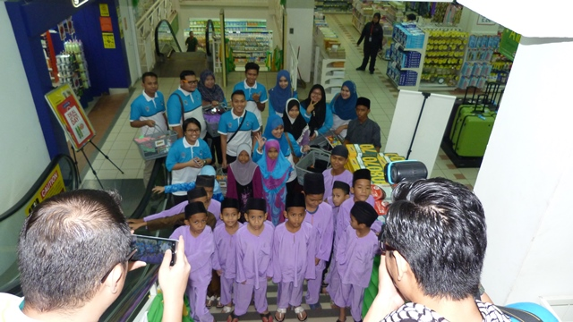
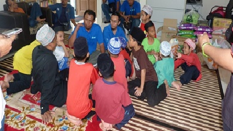
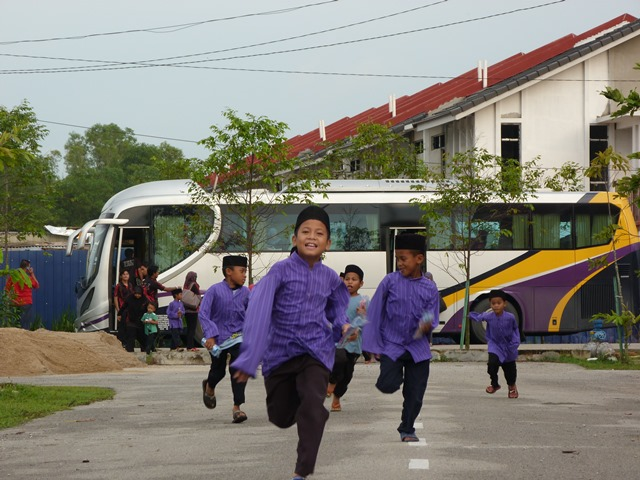

OBJECTIVE
1) Helping those in need
2) Become a center for fardhu ain recitation for low school children, youth and the local community.
3) To give birth to a loving, safe and harmonious society and concern for the distress of others.
4) Become a forum for establishing relationships between capable groups and those who are less fortunate.

SERVICES
SIn addition to providing hostel needs for orphans and those who need protection here, Budi Bistari Charity House also provides the following services:
Provide enough lessons and education for children to prepare for the future in order to gain glory in this world and safety in the hereafter.
Distributing all donations received is not only for the children who live in this charity house, but also given to orphans and other asnaf groups who live with their families.
Opening Al-Quran and fardhu ain recitation classes for community children.
